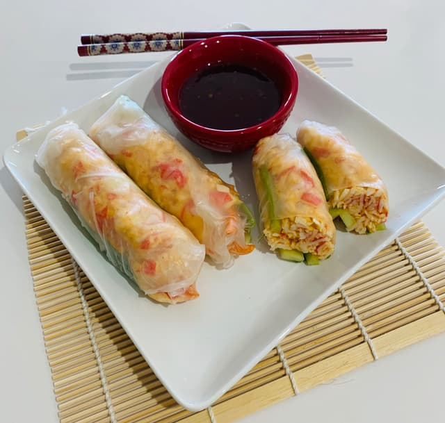

Rangoon Egg Rolls

Ingredients
Egg Rolls
- 8 oz cooked white crab meat
- 4 oz organic cream cheese
- 3 spring onions, finely sliced
- ½ tsp garlic powder
- Sea Salt
- White pepper
- Vietnamese rice paper squares
- Oil, for deep frying
Sauce
- 1/4 cup soy sauce
- 1 tablespoon sesame oil
- 1 tablespoon rice wine vinegar
- Sesame seeds, for garnish
- Red pepper flakes, for garnish
Instructions
- Combine the crab meat with cream cheese, spring onions, garlic powder, and Worcestershire sauce in a mixing bowl. Season well with salt and white pepper.
- Trim the rice paper squares into suitable squares (ours were 8.5 x 8.5 in, so we cut each one into 4 smaller squares, approx. 4 x 4 in each) and dip into a bowl of warm water – one at a time - as per the packet instructions.
- Scoop a small amount of the crab mixture onto the lower half of the softened rice paper and tuck in the two sides. Roll the rice paper as you would when making a wrap or a spring roll and set aside. Repeat with the remaining mixture until you have made 16.